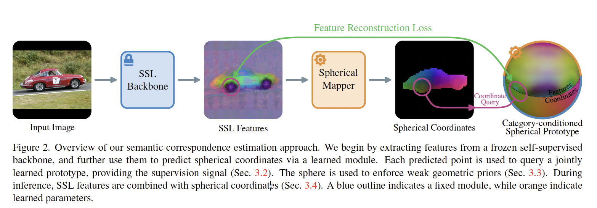
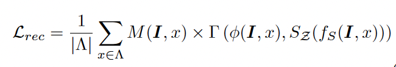
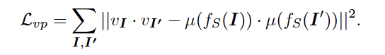
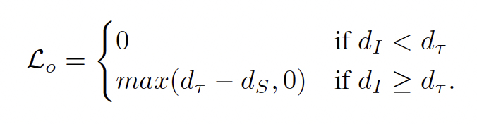

home..
Improving Semantic Corresspondence With Viewpoint Guided Spherical Maps copy
noonddudung2 / September 2024 (724 Words, 5 Minutes)
CVPR 2024 oral
semantic correspondence
Paper
Background
- Self-distillation with no labels (DINO)
- SSL
- Semantic Corresspondence (SC)
Abstract
Introduction
- 문제점: 3D understanding이 없는 simple part detecting SSL SC 방식
- object symmetries : 대칭의 object를 보여주었을 때 -> reflected version of feature map 만듦
- repeated structures : 비슷하게 보이는 부분들에 대해 비슷한 특징으로 인식
- 해결책
- seperate visually similar parts (repeated structures) by mapping them to different locationon a sphere
- simple genomtric constraints during the training
- new evaluation protocol: PCK to KAP
Related Work
- Image Matching: 다른 view에서 같은 부분 찾기
- Semantic Correspondence (SC)
- 다른 view에서 같은 object instance 찾기만 하는 것이 아닌, 같은 object category의 instances 찾기
- 3D priors for correspondence
- 보통 annotaed meshes 사용해서 SC
- mesh가 없는 경우 precise camera pose를 통해서 SC
- 이 논문에서는 mesh 없이 coarse viewpoint supervision으로도 SC 가능
Method
Problem statement
- General Formulation
- 목적: learn a mapping $f(I,x)=z \ or \ f(I)=z$로 표시
- $I: \Lambda \rightarrow \mathbb{R}^3, \Lambda \subset \mathbb{R}^2$
- a pixel location: $ x \in \Lambda$
- n-dimensional embedding space $ z \in \mathcal{Z} \subset \mathbb{R}^n$
- $f(I,x) = f(I’,x’)$ when $x \leftrightarrow x’$ same semantic part and instance
- $argmin_{x’}d_{\mathcal{Z}(f(I,x),f(I’,x’))}$
- 목적: learn a mapping $f(I,x)=z \ or \ f(I)=z$로 표시
- Spherical mapping
- simplified the 3D structure to a sphere $S^2 \subset \mathbb{R}^3$
- $S$는 geodesic distance 제공하여 계산을 단순하게 만들어 줌
- 따라서 이 논문에서는 $f_{S}(I,x)$ spherical mapping이 목적
- simplified the 3D structure to a sphere $S^2 \subset \mathbb{R}^3$
Learning formulation
 
- $\phi: \Lambda \rightarrow \mathcal{Z}_{\phi} $: pretrained SSl model
- spherical prototype $S_{\mathcal{Z}}: S \rightarrow \mathcal{Z}$
- $M(I,x)$ : object’s sufrace에 만 적용되어서 loss computation 제한
- $\Gamma (\phi(I,x),S_{\mathcal{Z}(f_S(I,x))})$: SSL pretrained model의 z location sphere z location 간의 차이를 줄이기 위한 목적
- $\Gamma$: cosine distance
- $S_{\mathcal{Z}}$: ViT self attention 없이 cross attention 으로 cateogry condition으로 넣어서 사용
Enforcing gemoetric priors
- Viewpoint regularization 
- Relative distance loss
- $||a-b|| \leq ||a-c|| \longleftrightarrow \Gamma(s_a,s_b) \leq \Gamma(s_a,s_c)$
- triplet margin loss: $\mathcal{L}_{rd} = max(\Gamma(f_S(I,anc),f_S(I,pos)-\Gamma(f_S(I,anc),f_S(I,neg))+\sigma,0))$
- pos = $argmin_{x\in{ b,c }}||a-x||$
- Orientation loss

- x \in \mathbb{R}^{}
Correspondence via combined represntations
- x \in \mathbb{R}^{}
- $p^* = argmin_p \Gamma(f_S(I,q),f_S(I’,p))$
- q: query location
- $p^* = argmin_p(a-\alpha)\Gamma(\phi(I,q),\phi(I’,p)) + \alpha \Gamma(f_S(I,q),f_S(I’,p))$
Summary & Review/span>
- 원래 SC task에서 어떤 방식으로 했는지를 정확히 모르니까 차이점을 알기가 어려운 듯